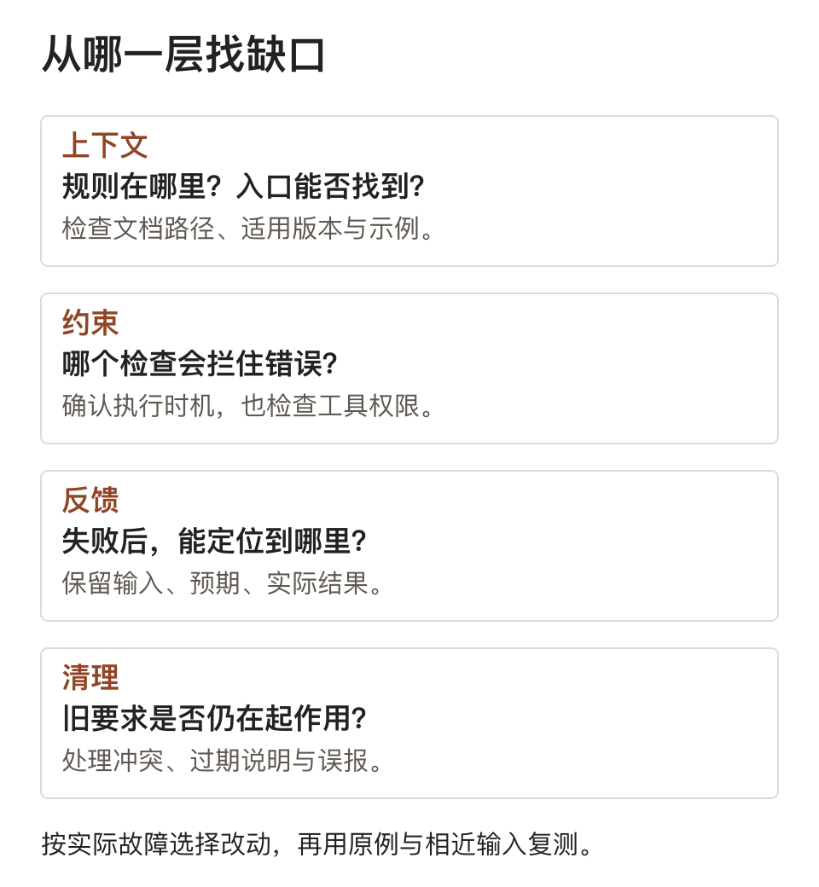

Agent 反复犯错三次后，先检查这四层环境
烟花老师
同一条要求，上一轮刚纠正，下一轮又错了。再补一句“务必注意”，有时能让眼前的任务通过，却没有改变下次开工的条件。
这时有两个问题值得先查：纠正意见留在了哪里？下一次执行时，什么东西会拦住同类错误？
如果答案分别是“聊天记录里”和“靠模型记住”，这次纠正还没有进入工作流程。反复犯错三次，可以当作停下来排查的提醒；
它没有统计阈值的含义，涉及数据和权限的错误也不该等到第三次。
先确认，它到底看到了什么
设想一个仓库规定：页面不能直接查询数据库，必须经过服务层。Agent 交付的代码绕过了这层限制。
先别急着补整页架构说明。检查入口文档有没有指向这条规则，路径是否有效，文件中的例子是否仍对应当前代码。
规则存在于仓库，与执行者读到了规则，是两件需要分别核对的事。
如果它确实读过，再看要求是否明确。只写“保持良好分层”，不足以判断一条具体依赖是否合法。
把允许的调用方向、禁止的引用和一个可运行示例写清，才有可执行的边界。
OpenAI 的 Harness Engineering 文章也记录过类似调整：让简短的 AGENTS.md 负责导航，把详细知识放进版本管理的文档，再用检查程序维护结构与时效。
这是他们的工程实践，不构成所有项目都要复制的标准答案。
对自己的仓库，更有用的检查是：一个新任务能否从入口找到规则，再从规则走到代码和测试？路径断在哪里，就先修哪里。
四层环境，各自解决不同的缺口
上下文解决“凭什么这样做”。 项目约定、数据边界、当前版本和参考实现，应该有可查的位置。
临时讨论可以提供线索，正式决策需要落到会被维护的记录里。
也别把所有资料同时塞进上下文。任务只涉及一条接口时，完整历史可能掩盖当前约束。入口负责指路，执行时再读取相关材料。
约束解决“做错了能否被拦住”。 依赖方向、字段格式、权限范围等可确定的规则，应尽量有程序检查。
前面的分层问题，可以用结构检查发现页面层直接引用数据库的代码。
检查器还要知道何时运行。写了测试却没有接入验收，仍然可能交付错误结果。
对高风险操作，工具自身应限制权限，不能只等模型在操作前想起一句提醒。
反馈解决“下一步改哪里”。 一条“测试失败”信息通常不够。预期结果、实际结果、出错对象和复现输入，应当一起返回。
涉及隐私的日志先脱敏，不能为了方便诊断暴露真实客户数据。
清理解决“现在以谁为准”。 新规则加入后，要处理相反的旧说明。否则 Agent 可能只是遵守了另一份仍然可见的文档。

沿着一次错误检查四层环境，比同时追加四组要求更容易找到原因。
这四层不必同时建设。一个找不到文档的问题，先修导航；一个越权操作的问题，先收紧工具权限。
用故障决定投入位置，才不容易把轻量任务做成框架工程。
把这次失败留成可复测的用例
记录一次最小复现，至少说明输入是什么、当时有哪些资料、实际做了什么，以及预期结果。
先保留现场，再修改规则，免得连原来的失败条件都找不回来。
随后做一个小改动：补入口、写清约束，或者加一道检查。只改一个主要因素，下一轮才比较容易判断效果来自哪里。
验证时可以按五步走：
1. 用原输入确认错误能够复现，记录环境与版本。
2. 判断缺少的是资料、明确约束，还是能阻止错误的检查。
3. 把修正放到下一次任务能够发现或执行的位置。
4. 检查验收器能否拒绝原来的错误结果，同时接受正确结果。
5. 新开一次任务复测，再换一个相近输入，看修正是否只对原例子有效。
其中第四步很容易漏掉。一个永远通过的检查器，会制造安全感；一个把所有结果都拒绝的检查器，则会把任务卡死。
两种都不能说明约束已经有效。
如果还要比较模型，就固定资料、工具和验收条件，再换模型跑。否则环境补全与模型升级同时发生，很难分清哪项改变起了作用。
检查通过，也要知道没检查到什么
自动检查通常只覆盖一部分事实。结构检查可以发现直接依赖，却未必能判断服务层是否暴露了过宽的能力；
单元测试通过，也不能替代外部系统的结果查询。
遇到写入超时，更不能仅凭一段日志就宣布失败并重新创建。先查目标状态；无法确认时，保留不确定状态并停止可能重复的操作。
规则也有维护成本。接口换了、模块拆了、平台提供了新能力，旧检查可能开始误报。
每条长期约束最好能找到对应的失败用例和维护位置，避免只因“以前加过”就永久留下。
**一次纠正是否有效，要看下一次任务能否独立发现规则、避开错误并给出验收证据。
** 先用一个真实失败把这条路径跑通，再决定是否扩成通用 Harness。
这是我的付费专栏，聚焦在 Agent 技术硬核内容，说是一个专栏，其实是七个专栏，如果你也在 AI 转型中，非常适合，这七大专栏会覆盖技术和产品类自媒体怎么做，怎么把 vibe coding 产品变得有商用价值，怎么做营销推广，怎么做开源项目，还会覆盖类似本篇内容这样的硬核技术，都是我的一手实战经验。更好的是还有一个配套的社群，大家一起讨论，共建，感兴趣的小伙伴扫码付费找到我呦！